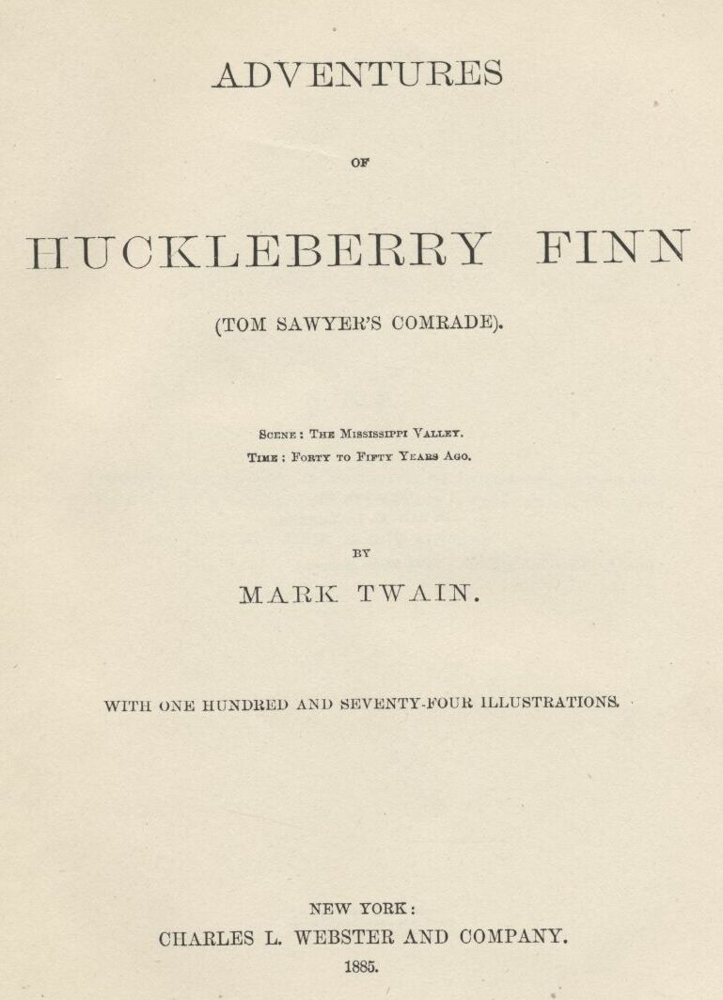
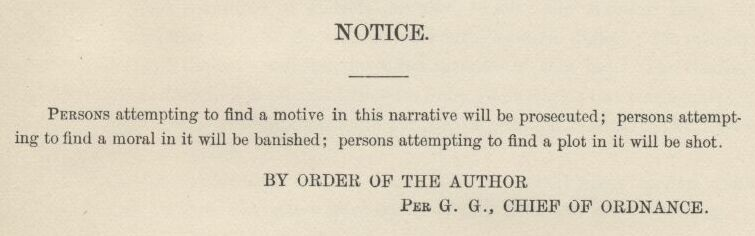
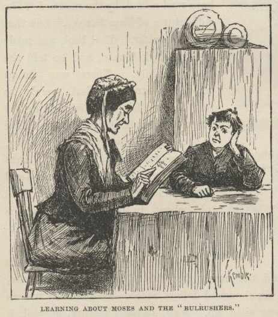
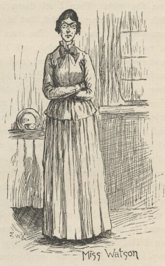
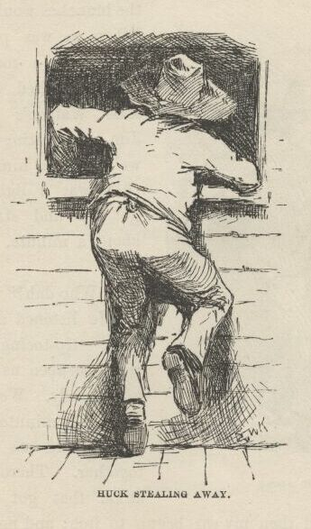
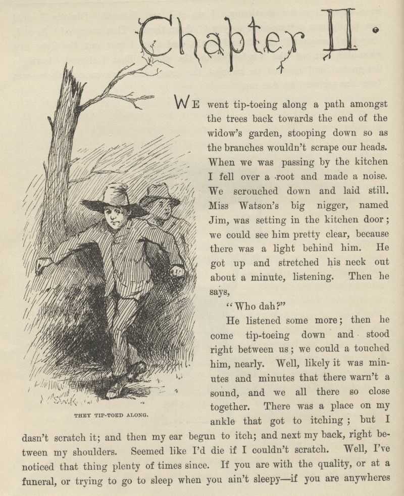

Adventures of Huckleberry Finn
The Project Gutenberg EBook of Adventures of Huckleberry Finn, Complete
by Mark Twain (Samuel Clemens)
This eBook is for the use of anyone anywhere at no cost and with
almost no restrictions whatsoever. You may copy it, give it away or
re-use it under the terms of the Project Gutenberg License included
with this eBook or online at www.gutenberg.net
Title: Adventures of Huckleberry Finn, Complete
Author: Mark Twain (Samuel Clemens)
Release Date: August 20, 2006 [EBook #76]
Last Updated: July 14, 2014
Language: English
*** START OF THIS PROJECT GUTENBERG EBOOK HUCKLEBERRY FINN ***
Produced by David Widger
ADVENTURES
OF
HUCKLEBERRY FINN
(Tom Sawyer's Comrade)
By Mark Twain
Complete
Format Choice
The present format is best for most laptops and computers, and generates well to .mobi and .epub files. The higher quality images in this file do not reduce in size to fit the small
screens of Tablets and Smart Phones—part of the larger images may run off the side.
Two other formats are available by clicking on the following lines:
1. The original ebook which was split into several small files.
2. A file with images which automatically accomodate to any screen size; this is the best choice for the small screens of Tablets and Smart Phones.
1. The original ebook which was split into several small files.
2. A file with images which automatically accomodate to any screen size; this is the best choice for the small screens of Tablets and Smart Phones.

CONTENTS.
CHAPTER I.
Civilizing Huck.—Miss Watson.—Tom Sawyer Waits.
CHAPTER II.
The Boys Escape Jim.—Torn Sawyer's Gang.—Deep-laid Plans.
CHAPTER III.
A Good Going-over.—Grace Triumphant.—"One of Tom Sawyers's Lies".
CHAPTER IV.
Huck and the Judge.—Superstition.
CHAPTER V.
Huck's Father.—The Fond Parent.—Reform.
CHAPTER VI.
He Went for Judge Thatcher.—Huck Decided to Leave.—Political
Economy.—Thrashing Around.
CHAPTER VII.
Laying for Him.—Locked in the Cabin.—Sinking the Body.—Resting.
CHAPTER VIII.
Sleeping in the Woods.—Raising the Dead.—Exploring the Island.—Finding
Jim.—Jim's Escape.—Signs.—Balum.
CHAPTER IX.
The Cave.—The Floating House.
CHAPTER X.
The Find.—Old Hank Bunker.—In Disguise.
CHAPTER XI.
Huck and the Woman.—The Search.—Prevarication.—Going to Goshen.
CHAPTER XII.
Slow Navigation.—Borrowing Things.—Boarding the Wreck.—The
Plotters.—Hunting for the Boat.
CHAPTER XIII.
Escaping from the Wreck.—The Watchman.—Sinking.
CHAPTER XIV.
A General Good Time.—The Harem.—French.
CHAPTER XV.
Huck Loses the Raft.—In the Fog.—Huck Finds the Raft.—Trash.
CHAPTER XVI.
Expectation.—A White Lie.—Floating Currency.—Running by
Cairo.—Swimming Ashore.
CHAPTER XVII.
An Evening Call.—The Farm in Arkansaw.—Interior Decorations.—Stephen
Dowling Bots.—Poetical Effusions.
CHAPTER XVIII.
Col. Grangerford.—Aristocracy.—Feuds.—The Testament.—Recovering the
Raft.—The Wood—pile.—Pork and Cabbage.
CHAPTER XIX.
Tying Up Day—times.—An Astronomical Theory.—Running a Temperance
Revival.—The Duke of Bridgewater.—The Troubles of Royalty.
CHAPTER XX.
Huck Explains.—Laying Out a Campaign.—Working the Camp—meeting.—A
Pirate at the Camp—meeting.—The Duke as a Printer.
CHAPTER XXI.
Sword Exercise.—Hamlet's Soliloquy.—They Loafed Around Town.—A Lazy
Town.—Old Boggs.—Dead.
CHAPTER XXII.
Sherburn.—Attending the Circus.—Intoxication in the Ring.—The
Thrilling Tragedy.
CHAPTER XXIII.
Sold.—Royal Comparisons.—Jim Gets Home-sick.
CHAPTER XXIV.
Jim in Royal Robes.—They Take a Passenger.—Getting Information.—Family
Grief.
CHAPTER XXV.
Is It Them?—Singing the "Doxologer."—Awful Square—Funeral Orgies.—A
Bad Investment .
CHAPTER XXVI.
A Pious King.—The King's Clergy.—She Asked His Pardon.—Hiding in the
Room.—Huck Takes the Money.
CHAPTER XXVII.
The Funeral.—Satisfying Curiosity.—Suspicious of Huck,—Quick Sales and
Small.
CHAPTER XXVIII.
The Trip to England.—"The Brute!"—Mary Jane Decides to Leave.—Huck
Parting with Mary Jane.—Mumps.—The Opposition Line.
CHAPTER XXIX.
Contested Relationship.—The King Explains the Loss.—A Question of
Handwriting.—Digging up the Corpse.—Huck Escapes.
CHAPTER XXX.
The King Went for Him.—A Royal Row.—Powerful Mellow.
CHAPTER XXXI.
Ominous Plans.—News from Jim.—Old Recollections.—A Sheep
Story.—Valuable Information.
CHAPTER XXXII.
Still and Sunday—like.—Mistaken Identity.—Up a Stump.—In a Dilemma.
CHAPTER XXXIII.
A Nigger Stealer.—Southern Hospitality.—A Pretty Long Blessing.—Tar
and Feathers.
CHAPTER XXXIV.
The Hut by the Ash Hopper.—Outrageous.—Climbing the Lightning
Rod.—Troubled with Witches.
CHAPTER XXXV.
Escaping Properly.—Dark Schemes.—Discrimination in Stealing.—A Deep
Hole.
CHAPTER XXXVI.
The Lightning Rod.—His Level Best.—A Bequest to Posterity.—A High
Figure.
CHAPTER XXXVII.
The Last Shirt.—Mooning Around.—Sailing Orders.—The Witch Pie.
CHAPTER XXXVIII.
The Coat of Arms.—A Skilled Superintendent.—Unpleasant Glory.—A
Tearful Subject.
CHAPTER XXXIX.
Rats.—Lively Bed—fellows.—The Straw Dummy.
CHAPTER XL.
Fishing.—The Vigilance Committee.—A Lively Run.—Jim Advises a Doctor.
CHAPTER XLI.
The Doctor.—Uncle Silas.—Sister Hotchkiss.—Aunt Sally in Trouble.
CHAPTER XLII.
Tom Sawyer Wounded.—The Doctor's Story.—Tom Confesses.—Aunt Polly
Arrives.—Hand Out Them Letters .
CHAPTER THE LAST.
Out of Bondage.—Paying the Captive.—Yours Truly, Huck Finn.
Civilizing Huck.—Miss Watson.—Tom Sawyer Waits.
CHAPTER II.
The Boys Escape Jim.—Torn Sawyer's Gang.—Deep-laid Plans.
CHAPTER III.
A Good Going-over.—Grace Triumphant.—"One of Tom Sawyers's Lies".
CHAPTER IV.
Huck and the Judge.—Superstition.
CHAPTER V.
Huck's Father.—The Fond Parent.—Reform.
CHAPTER VI.
He Went for Judge Thatcher.—Huck Decided to Leave.—Political
Economy.—Thrashing Around.
CHAPTER VII.
Laying for Him.—Locked in the Cabin.—Sinking the Body.—Resting.
CHAPTER VIII.
Sleeping in the Woods.—Raising the Dead.—Exploring the Island.—Finding
Jim.—Jim's Escape.—Signs.—Balum.
CHAPTER IX.
The Cave.—The Floating House.
CHAPTER X.
The Find.—Old Hank Bunker.—In Disguise.
CHAPTER XI.
Huck and the Woman.—The Search.—Prevarication.—Going to Goshen.
CHAPTER XII.
Slow Navigation.—Borrowing Things.—Boarding the Wreck.—The
Plotters.—Hunting for the Boat.
CHAPTER XIII.
Escaping from the Wreck.—The Watchman.—Sinking.
CHAPTER XIV.
A General Good Time.—The Harem.—French.
CHAPTER XV.
Huck Loses the Raft.—In the Fog.—Huck Finds the Raft.—Trash.
CHAPTER XVI.
Expectation.—A White Lie.—Floating Currency.—Running by
Cairo.—Swimming Ashore.
CHAPTER XVII.
An Evening Call.—The Farm in Arkansaw.—Interior Decorations.—Stephen
Dowling Bots.—Poetical Effusions.
CHAPTER XVIII.
Col. Grangerford.—Aristocracy.—Feuds.—The Testament.—Recovering the
Raft.—The Wood—pile.—Pork and Cabbage.
CHAPTER XIX.
Tying Up Day—times.—An Astronomical Theory.—Running a Temperance
Revival.—The Duke of Bridgewater.—The Troubles of Royalty.
CHAPTER XX.
Huck Explains.—Laying Out a Campaign.—Working the Camp—meeting.—A
Pirate at the Camp—meeting.—The Duke as a Printer.
CHAPTER XXI.
Sword Exercise.—Hamlet's Soliloquy.—They Loafed Around Town.—A Lazy
Town.—Old Boggs.—Dead.
CHAPTER XXII.
Sherburn.—Attending the Circus.—Intoxication in the Ring.—The
Thrilling Tragedy.
CHAPTER XXIII.
Sold.—Royal Comparisons.—Jim Gets Home-sick.
CHAPTER XXIV.
Jim in Royal Robes.—They Take a Passenger.—Getting Information.—Family
Grief.
CHAPTER XXV.
Is It Them?—Singing the "Doxologer."—Awful Square—Funeral Orgies.—A
Bad Investment .
CHAPTER XXVI.
A Pious King.—The King's Clergy.—She Asked His Pardon.—Hiding in the
Room.—Huck Takes the Money.
CHAPTER XXVII.
The Funeral.—Satisfying Curiosity.—Suspicious of Huck,—Quick Sales and
Small.
CHAPTER XXVIII.
The Trip to England.—"The Brute!"—Mary Jane Decides to Leave.—Huck
Parting with Mary Jane.—Mumps.—The Opposition Line.
CHAPTER XXIX.
Contested Relationship.—The King Explains the Loss.—A Question of
Handwriting.—Digging up the Corpse.—Huck Escapes.
CHAPTER XXX.
The King Went for Him.—A Royal Row.—Powerful Mellow.
CHAPTER XXXI.
Ominous Plans.—News from Jim.—Old Recollections.—A Sheep
Story.—Valuable Information.
CHAPTER XXXII.
Still and Sunday—like.—Mistaken Identity.—Up a Stump.—In a Dilemma.
CHAPTER XXXIII.
A Nigger Stealer.—Southern Hospitality.—A Pretty Long Blessing.—Tar
and Feathers.
CHAPTER XXXIV.
The Hut by the Ash Hopper.—Outrageous.—Climbing the Lightning
Rod.—Troubled with Witches.
CHAPTER XXXV.
Escaping Properly.—Dark Schemes.—Discrimination in Stealing.—A Deep
Hole.
CHAPTER XXXVI.
The Lightning Rod.—His Level Best.—A Bequest to Posterity.—A High
Figure.
CHAPTER XXXVII.
The Last Shirt.—Mooning Around.—Sailing Orders.—The Witch Pie.
CHAPTER XXXVIII.
The Coat of Arms.—A Skilled Superintendent.—Unpleasant Glory.—A
Tearful Subject.
CHAPTER XXXIX.
Rats.—Lively Bed—fellows.—The Straw Dummy.
CHAPTER XL.
Fishing.—The Vigilance Committee.—A Lively Run.—Jim Advises a Doctor.
CHAPTER XLI.
The Doctor.—Uncle Silas.—Sister Hotchkiss.—Aunt Sally in Trouble.
CHAPTER XLII.
Tom Sawyer Wounded.—The Doctor's Story.—Tom Confesses.—Aunt Polly
Arrives.—Hand Out Them Letters .
CHAPTER THE LAST.
Out of Bondage.—Paying the Captive.—Yours Truly, Huck Finn.
ILLUSTRATIONS.
The Widows
Moses and the "Bulrushers"
Miss Watson
Huck Stealing Away
They Tip-toed Along
Jim
Tom Sawyer's Band of Robbers
Huck Creeps into his Window
Miss Watson's Lecture
The Robbers Dispersed
Rubbing the Lamp
! ! ! !
Judge Thatcher surprised
Jim Listening
"Pap"
Huck and his Father
Reforming the Drunkard
Falling from Grace
The Widows
Moses and the "Bulrushers"
Miss Watson
Huck Stealing Away
They Tip-toed Along
Jim
Tom Sawyer's Band of Robbers
Huck Creeps into his Window
Miss Watson's Lecture
The Robbers Dispersed
Rubbing the Lamp
! ! ! !
Judge Thatcher surprised
Jim Listening
"Pap"
Huck and his Father
Reforming the Drunkard
Falling from Grace
Getting out of the Way
Solid Comfort
Thinking it Over
Raising a Howl
"Git Up"
The Shanty
Shooting the Pig
Taking a Rest
In the Woods
Watching the Boat
Discovering the Camp Fire
Jim and the Ghost
Misto Bradish's Nigger
Exploring the Cave
In the Cave
Jim sees a Dead Man
They Found Eight Dollars
Jim and the Snake
Old Hank Bunker
"A Fair Fit"
"Come In"
"Him and another Man"
She puts up a Snack
"Hump Yourself"
On the Raft
He sometimes Lifted a Chicken
"Please don't, Bill"
"It ain't Good Morals"
"Oh! Lordy, Lordy!"
In a Fix
"Hello, What's Up?"
The Wreck
We turned in and Slept
Turning over the Truck
Solomon and his Million Wives
The story of "Sollermun"
"We Would Sell the Raft"
Among the Snags
Asleep on the Raft
"Something being Raftsman"
"Boy, that's a Lie"
"Here I is, Huck"
Climbing up the Bank
"Who's There?"
"Buck"
"It made Her look Spidery"
"They got him out and emptied Him"
The House
Col. Grangerford
Young Harney Shepherdson
Miss Charlotte
"And asked me if I Liked Her"
"Behind the Wood-pile"
Hiding Day-times
"And Dogs a-Coming"
"By rights I am a Duke!"
"I am the Late Dauphin"
Tail Piece
On the Raft
The King as Juliet
"Courting on the Sly"
"A Pirate for Thirty Years"
Another little Job
Practizing
Hamlet's Soliloquy
"Gimme a Chaw"
A Little Monthly Drunk
The Death of Boggs
Sherburn steps out
A Dead Head
He shed Seventeen Suits
Tragedy
Their Pockets Bulged
Henry the Eighth in Boston Harbor
Harmless
Adolphus
He fairly emptied that Young Fellow
"Alas, our Poor Brother"
"You Bet it is"
Leaking
Making up the "Deffisit"
Going for him
The Doctor
The Bag of Money
The Cubby
Supper with the Hare-Lip
Honest Injun
The Duke looks under the Bed
Huck takes the Money
A Crack in the Dining-room Door
The Undertaker
"He had a Rat!"
"Was you in my Room?"
Jawing
In Trouble
Indignation
How to Find Them
He Wrote
Hannah with the Mumps
The Auction
The True Brothers
The Doctor leads Huck
The Duke Wrote
"Gentlemen, Gentlemen!"
"Jim Lit Out"
The King shakes Huck
The Duke went for Him
Spanish Moss
"Who Nailed Him?"
Thinking
He gave him Ten Cents
Striking for the Back Country
Still and Sunday-like
She hugged him tight
"Who do you reckon it is?"
"It was Tom Sawyer"
"Mr. Archibald Nichols, I presume?"
A pretty long Blessing
Traveling By Rail
Vittles
A Simple Job
Witches
Getting Wood
One of the Best Authorities
The Breakfast-Horn
Smouching the Knives
Going down the Lightning-Rod
Stealing spoons
Tom advises a Witch Pie
The Rubbage-Pile
"Missus, dey's a Sheet Gone"
In a Tearing Way
One of his Ancestors
Jim's Coat of Arms
A Tough Job
Buttons on their Tails
Irrigation
Keeping off Dull Times
Sawdust Diet
Trouble is Brewing
Fishing
Every one had a Gun
Tom caught on a Splinter
Jim advises a Doctor
The Doctor
Uncle Silas in Danger
Old Mrs. Hotchkiss
Aunt Sally talks to Huck
Tom Sawyer wounded
The Doctor speaks for Jim
Tom rose square up in Bed
"Hand out them Letters"
Out of Bondage
Tom's Liberality
Yours Truly
Moses and the "Bulrushers"
Miss Watson
Huck Stealing Away
They Tip-toed Along
Jim
Tom Sawyer's Band of Robbers
Huck Creeps into his Window
Miss Watson's Lecture
The Robbers Dispersed
Rubbing the Lamp
! ! ! !
Judge Thatcher surprised
Jim Listening
"Pap"
Huck and his Father
Reforming the Drunkard
Falling from Grace
The Widows
Moses and the "Bulrushers"
Miss Watson
Huck Stealing Away
They Tip-toed Along
Jim
Tom Sawyer's Band of Robbers
Huck Creeps into his Window
Miss Watson's Lecture
The Robbers Dispersed
Rubbing the Lamp
! ! ! !
Judge Thatcher surprised
Jim Listening
"Pap"
Huck and his Father
Reforming the Drunkard
Falling from Grace
Getting out of the Way
Solid Comfort
Thinking it Over
Raising a Howl
"Git Up"
The Shanty
Shooting the Pig
Taking a Rest
In the Woods
Watching the Boat
Discovering the Camp Fire
Jim and the Ghost
Misto Bradish's Nigger
Exploring the Cave
In the Cave
Jim sees a Dead Man
They Found Eight Dollars
Jim and the Snake
Old Hank Bunker
"A Fair Fit"
"Come In"
"Him and another Man"
She puts up a Snack
"Hump Yourself"
On the Raft
He sometimes Lifted a Chicken
"Please don't, Bill"
"It ain't Good Morals"
"Oh! Lordy, Lordy!"
In a Fix
"Hello, What's Up?"
The Wreck
We turned in and Slept
Turning over the Truck
Solomon and his Million Wives
The story of "Sollermun"
"We Would Sell the Raft"
Among the Snags
Asleep on the Raft
"Something being Raftsman"
"Boy, that's a Lie"
"Here I is, Huck"
Climbing up the Bank
"Who's There?"
"Buck"
"It made Her look Spidery"
"They got him out and emptied Him"
The House
Col. Grangerford
Young Harney Shepherdson
Miss Charlotte
"And asked me if I Liked Her"
"Behind the Wood-pile"
Hiding Day-times
"And Dogs a-Coming"
"By rights I am a Duke!"
"I am the Late Dauphin"
Tail Piece
On the Raft
The King as Juliet
"Courting on the Sly"
"A Pirate for Thirty Years"
Another little Job
Practizing
Hamlet's Soliloquy
"Gimme a Chaw"
A Little Monthly Drunk
The Death of Boggs
Sherburn steps out
A Dead Head
He shed Seventeen Suits
Tragedy
Their Pockets Bulged
Henry the Eighth in Boston Harbor
Harmless
Adolphus
He fairly emptied that Young Fellow
"Alas, our Poor Brother"
"You Bet it is"
Leaking
Making up the "Deffisit"
Going for him
The Doctor
The Bag of Money
The Cubby
Supper with the Hare-Lip
Honest Injun
The Duke looks under the Bed
Huck takes the Money
A Crack in the Dining-room Door
The Undertaker
"He had a Rat!"
"Was you in my Room?"
Jawing
In Trouble
Indignation
How to Find Them
He Wrote
Hannah with the Mumps
The Auction
The True Brothers
The Doctor leads Huck
The Duke Wrote
"Gentlemen, Gentlemen!"
"Jim Lit Out"
The King shakes Huck
The Duke went for Him
Spanish Moss
"Who Nailed Him?"
Thinking
He gave him Ten Cents
Striking for the Back Country
Still and Sunday-like
She hugged him tight
"Who do you reckon it is?"
"It was Tom Sawyer"
"Mr. Archibald Nichols, I presume?"
A pretty long Blessing
Traveling By Rail
Vittles
A Simple Job
Witches
Getting Wood
One of the Best Authorities
The Breakfast-Horn
Smouching the Knives
Going down the Lightning-Rod
Stealing spoons
Tom advises a Witch Pie
The Rubbage-Pile
"Missus, dey's a Sheet Gone"
In a Tearing Way
One of his Ancestors
Jim's Coat of Arms
A Tough Job
Buttons on their Tails
Irrigation
Keeping off Dull Times
Sawdust Diet
Trouble is Brewing
Fishing
Every one had a Gun
Tom caught on a Splinter
Jim advises a Doctor
The Doctor
Uncle Silas in Danger
Old Mrs. Hotchkiss
Aunt Sally talks to Huck
Tom Sawyer wounded
The Doctor speaks for Jim
Tom rose square up in Bed
"Hand out them Letters"
Out of Bondage
Tom's Liberality
Yours Truly

EXPLANATORY
IN this book a number of dialects are used, to wit: the Missouri negro dialect; the
extremest form of the backwoods Southwestern dialect; the ordinary "Pike County" dialect;
and four modified varieties of this last. The shadings have not been done in a haphazard
fashion, or by guesswork; but painstakingly, and with the trustworthy guidance and
support of personal familiarity with these several forms of speech.
I make this explanation for the reason that without it many readers would suppose
that all these characters were trying to talk alike and not succeeding.
THE AUTHOR.
HUCKLEBERRY FINN
Scene: The Mississippi Valley Time: Forty to fifty years ago

CHAPTER I.
YOU don't know about me without you have read a book by the name of The Adventures
of Tom Sawyer; but that ain't no matter. That book was made by Mr. Mark Twain, and
he told the truth, mainly. There was things which he stretched, but mainly he told
the truth. That is nothing. I never seen anybody but lied one time or another, without
it was Aunt Polly, or the widow, or maybe Mary. Aunt Polly—Tom's Aunt Polly, she
is—and Mary, and the Widow Douglas is all told about in that book, which is mostly
a true book, with some stretchers, as I said before.
Now the way that the book winds up is this: Tom and me found the money that the robbers
hid in the cave, and it made us rich. We got six thousand dollars apiece—all gold.
It was an awful sight of money when it was piled up. Well, Judge Thatcher he took
it and put it out at interest, and it fetched us a dollar a day apiece all the year
round—more than a body could tell what to do with. The Widow Douglas she took me
for her son, and allowed she would sivilize me; but it was rough living in the house
all the time, considering how dismal regular and decent the widow was in all her ways;
and so when I couldn't stand it no longer I lit out. I got into my old rags and my
sugar-hogshead again, and was free and satisfied. But Tom Sawyer he hunted me up
and said he was going to start a band of robbers, and I might join if I would go back
to the widow and be respectable. So I went back.
The widow she cried over me, and called me a poor lost lamb, and she called me a lot
of other names, too, but she never meant no harm by it. She put me in them new clothes
again, and I couldn't do nothing but sweat and sweat, and feel all cramped up. Well,
then, the old thing commenced again. The widow rung a bell for supper, and you had
to come to time. When you got to the table you couldn't go right to eating, but you
had to wait for the widow to tuck down her head and grumble a little over the victuals,
though there warn't really anything the matter with them,—that is, nothing only everything
was cooked by itself. In a barrel of odds and ends it is different; things get mixed
up, and the juice kind of swaps around, and the things go better.
After supper she got out her book and learned me about Moses and the Bulrushers, and
I was in a sweat to find out all about him; but by and by she let it out that Moses
had been dead a considerable long time; so then I didn't care no more about him, because
I don't take no stock in dead people.

Pretty soon I wanted to smoke, and asked the widow to let me. But she wouldn't. She
said it was a mean practice and wasn't clean, and I must try to not do it any more.
That is just the way with some people. They get down on a thing when they don't
know nothing about it. Here she was a-bothering about Moses, which was no kin to
her, and no use to anybody, being gone, you see, yet finding a power of fault with
me for doing a thing that had some good in it. And she took snuff, too; of course
that was all right, because she done it herself.
Her sister, Miss Watson, a tolerable slim old maid, with goggles on, had just come
to live with her, and took a set at me now with a spelling-book. She worked me middling
hard for about an hour, and then the widow made her ease up. I couldn't stood it
much longer. Then for an hour it was deadly dull, and I was fidgety. Miss Watson
would say, "Don't put your feet up there, Huckleberry;" and "Don't scrunch up like
that, Huckleberry—set up straight;" and pretty soon she would say, "Don't gap and
stretch like that, Huckleberry—why don't you try to behave?" Then she told me all
about the bad place, and I said I wished I was there. She got mad then, but I didn't
mean no harm. All I wanted was to go somewheres; all I wanted was a change, I warn't
particular. She said it was wicked to say what I said; said she wouldn't say it for
the whole world; she was going to live so as to go to the good place. Well, I couldn't
see no advantage in going where she was going, so I made up my mind I wouldn't try
for it. But I never said so, because it would only make trouble, and wouldn't do
no good.

Now she had got a start, and she went on and told me all about the good place. She
said all a body would have to do there was to go around all day long with a harp and
sing, forever and ever. So I didn't think much of it. But I never said so. I asked
her if she reckoned Tom Sawyer would go there, and she said not by a considerable
sight. I was glad about that, because I wanted him and me to be together.
Miss Watson she kept pecking at me, and it got tiresome and lonesome. By and by they
fetched the niggers in and had prayers, and then everybody was off to bed. I went
up to my room with a piece of candle, and put it on the table. Then I set down in
a chair by the window and tried to think of something cheerful, but it warn't no use.
I felt so lonesome I most wished I was dead. The stars were shining, and the leaves
rustled in the woods ever so mournful; and I heard an owl, away off, who-whooing about
somebody that was dead, and a whippowill and a dog crying about somebody that was
going to die; and the wind was trying to whisper something to me, and I couldn't make
out what it was, and so it made the cold shivers run over me. Then away out in the
woods I heard that kind of a sound that a ghost makes when it wants to tell about
something that's on its mind and can't make itself understood, and so can't rest easy
in its grave, and has to go about that way every night grieving. I got so down-hearted
and scared I did wish I had some company. Pretty soon a spider went crawling up my
shoulder, and I flipped it off and it lit in the candle; and before I could budge
it was all shriveled up. I didn't need anybody to tell me that that was an awful
bad sign and would fetch me some bad luck, so I was scared and most shook the clothes
off of me. I got up and turned around in my tracks three times and crossed my breast
every time; and then I tied up a little lock of my hair with a thread to keep witches
away. But I hadn't no confidence. You do that when you've lost a horseshoe that
you've found, instead of nailing it up over the door, but I hadn't ever heard anybody
say it was any way to keep off bad luck when you'd killed a spider.
I set down again, a-shaking all over, and got out my pipe for a smoke; for the house
was all as still as death now, and so the widow wouldn't know. Well, after a long
time I heard the clock away off in the town go boom—boom—boom—twelve licks; and all
still again—stiller than ever. Pretty soon I heard a twig snap down in the dark amongst
the trees—something was a stirring. I set still and listened. Directly I could just
barely hear a "me-yow! me-yow!" down there. That was good! Says I, "me-yow! me-yow!"
as soft as I could, and then I put out the light and scrambled out of the window on
to the shed. Then I slipped down to the ground and crawled in among the trees, and,
sure enough, there was Tom Sawyer waiting for me.


CHAPTER II.
WE went tiptoeing along a path amongst the trees back towards the end of the widow's
garden, stooping down so as the branches wouldn't scrape our heads. When we was passing
by the kitchen I fell over a root and made a noise. We scrouched down and laid still.
Miss Watson's big nigger, named Jim, was setting in the kitchen door; we could see
him pretty clear, because there was a light behind him. He got up and stretched his
neck out about a minute, listening. Then he says:
"Who dah?"
He listened some more; then he come tiptoeing down and stood right between us; we
could a touched him, nearly. Well, likely it was minutes and minutes that there warn't
a sound, and we all there so close together. There was a place on my ankle that got
to itching, but I dasn't scratch it; and then my ear begun to itch; and next my back,
right between my shoulders. Seemed like I'd die if I couldn't scratch. Well, I've
noticed that thing plenty times since. If you are with the quality, or at a funeral,
or trying to go to sleep when you ain't sleepy—if you are anywheres where it won't
do for you to scratch, why you will itch all over in upwards of a thousand places.
Pretty soon Jim says:
"Say, who is you? Whar is you? Dog my cats ef I didn' hear sumf'n. Well, I know
what I's gwyne to do: I's gwyne to set down here and listen tell I hears it agin."